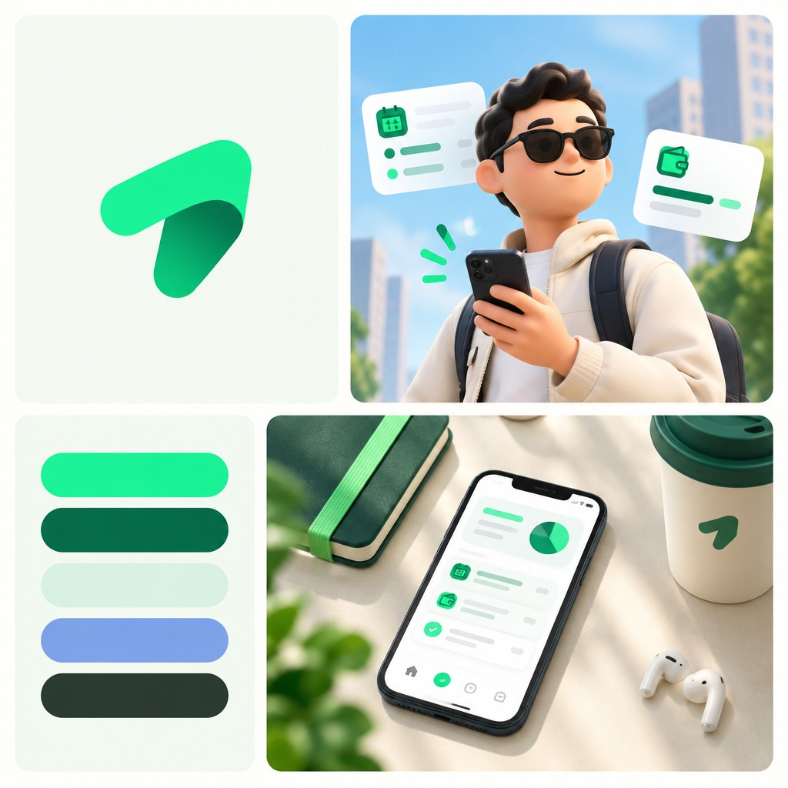

Rescate de la exploracion de Branda
Sin Brand Kit no hay SVG oficial ni tipografias empaquetadas. Esto es lo que se puede usar: la captura, la paleta medida pixel a pixel y una recreacion vectorial de la flecha plegada.
Simbolo

Paleta medida en la captura
Esos cinco hex ya viven en los tokens del repo (o a un paso). El hueco no es el color: es que el simbolo oficial todavia no es esta cinta.
Que se puede rescatar y que no
| Pieza | Estado |
|---|---|
| Direccion (verde, flecha, UI limpia, 3D editorial) | Si. Ya esta en el manual v2.0 |
| Paleta de 5 colores | Si. Medida de la captura; coincide con tokens.css |
| Simbolo | Recreado a mano en SVG. No es el archivo de Branda; es un trazo propio inspirado en la captura |
| Wordmark, fuentes, mockups, brand book | No. Requieren el kit de pago o recrearlos aqui |
| Personaje 3D y fotos de producto | Solo como mood (la JPG). No usarlas como marca oficial |
Moodboard completo
